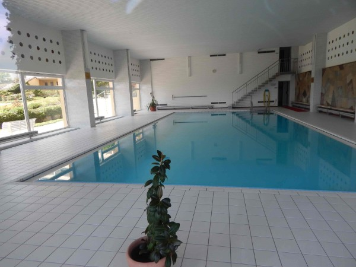
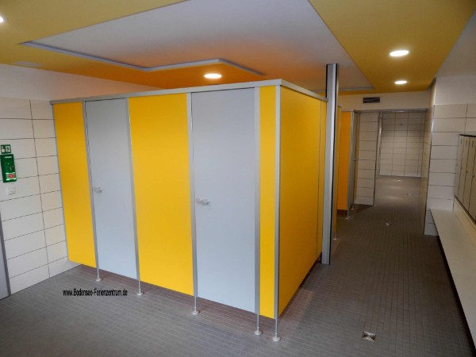
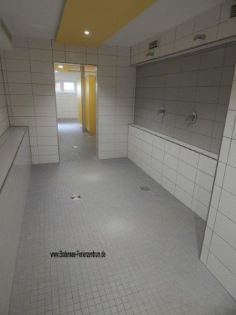

Hallenbad Das Hallenbad kann gerne genutzt werden und lädt alle Gäste ein.

Das exklusiv für Hausbewohner nutzbare, großzügige Hallenbad mit
ca. 14 x 7m Beckengröße ist täglich geöffnet. Es hat eine moderne Überflutungsanlage und Wasseraufbereitung.

Das Hallenbad ist zweiseitig
verglast, lichtdurchflutet, mit schöner Sicht in die eigene Parkanlage.
Die Umkleiden und Duschen sind 2018 frisch renoviert worden.
Die Benutzung ist für Feriengäste kostenlos.
